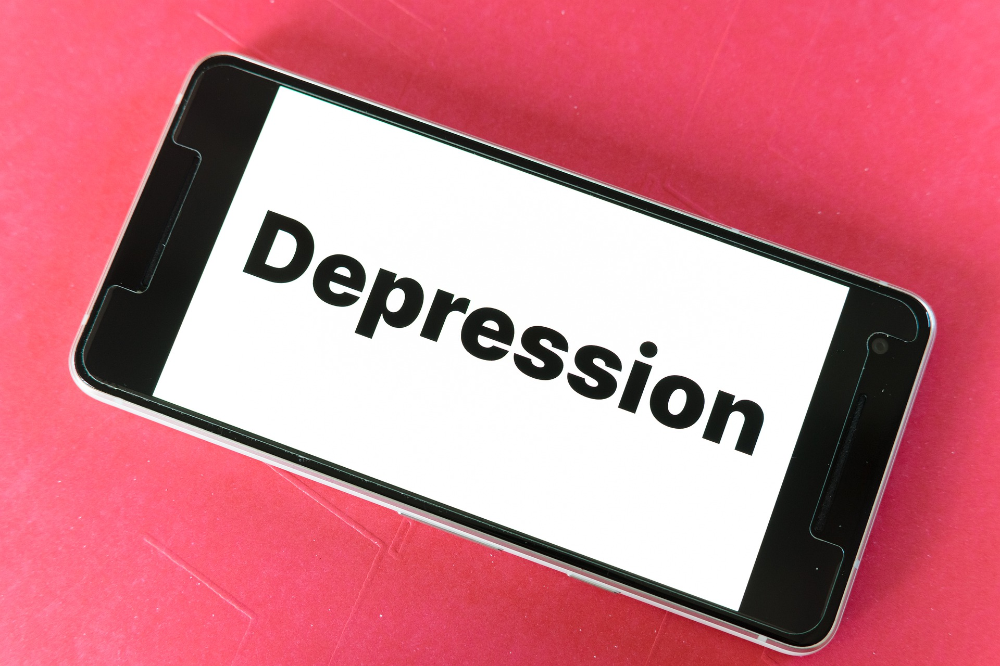
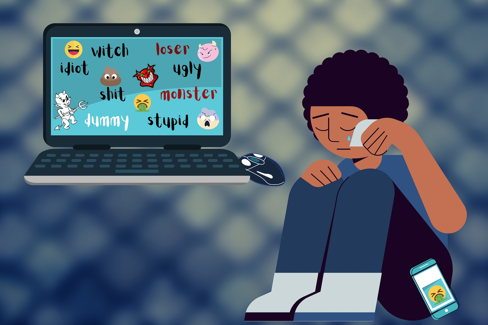
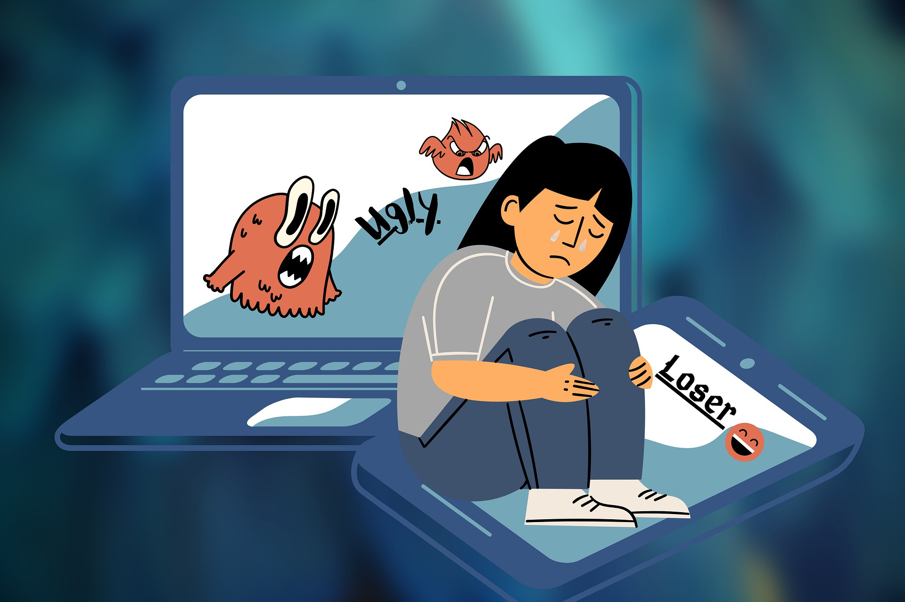
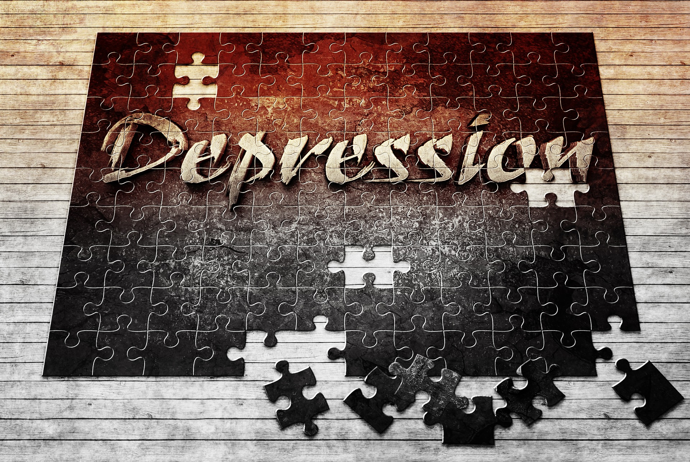

Las consecuencias del Cyberbullying
Los riesgos son menos claros que en los casos de bullying presencial, ya que cualquiera podría ser víctima de ciber acoso, sin embargo hay patrones que se repiten.
-

Ausentismo Escolar
-

Depresión
-

Abuso en consumo de sustancias nocivas para la salud
-

Desarrollo de baja autoestima
-

Problemas psicológicos
-
Cambios en comportamiento